ClinicusMed · Língua, Inervação Lingual, Nariz, Cavidade Nasal e Seios Paranasais · Ficha Padronizada
Essa ficha reúne dois territórios da cabeça que se encontram na cavidade oral e na faringe: a língua, órgão muscular móvel do assoalho da boca, responsável pela mastigação, deglutição, sucção, fonação e gustação; e o nariz com a cavidade nasal, via aérea superior, sede do olfato e caixa de ressonância da voz. Ambos têm inervação sensitiva pelo trigêmeo e relações íntimas com vários nervos cranianos (V, VII, IX, X, XII e I), o que os torna campo clássico de prova.
Ao final dessa ficha, você será capaz de descrever a morfologia da língua (raiz, corpo, vértice, surco terminal, forame cego, papilas e tonsila lingual); listar seus músculos intrínsecos e extrínsecos; distinguir a inervação sensitiva geral, gustativa e motora de cada região da língua; descrever o esqueleto osteocartilagíneo e o vestíbulo do nariz; identificar conchas, meatos e paredes da cavidade nasal; reconhecer a irrigação da mucosa nasal (área de Kiesselbach) e a via olfatória; e aplicar esses conhecimentos a epistaxe, sinusite, anosmia e lesão do hipoglosso.
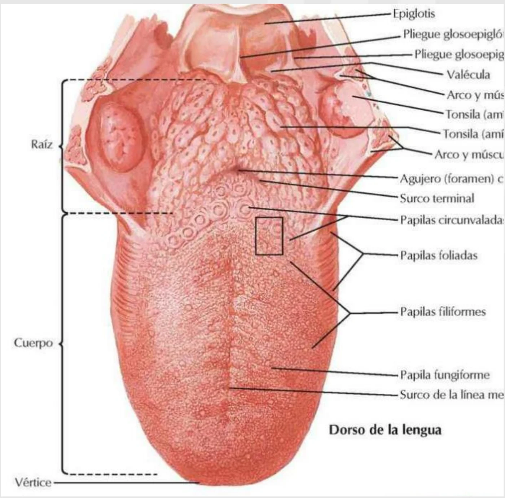
A língua tem forma de cone; é um órgão ímpar, mediano e simétrico, formação muscular muito móvel revestida de mucosa. Participa da mastigação, deglutição, sucção e fonação (articulação das palavras) e é o órgão receptor da gustação.
Divide-se em duas partes: uma parte anterior móvel (corpo e vértice) e uma parte posterior mais fixa, a raiz da língua. A parte móvel é limitada atrás pelo surco terminal (V lingual), na união dos 2/3 anteriores com o 1/3 posterior.
| Estrutura | Característica |
|---|---|
| Surco terminal (V lingual) | Fica por trás e paralelo às papilas circunvaladas; separa a parte móvel da raiz |
| Forame cego | Na parte mediana do surco terminal; cicatriz deprimida do conduto tireoglosso embrionário |
| Atrás do surco terminal | Superfície irregular, com folículos linguais que formam a tonsila (amígdala) lingual |
O dorso da língua é recoberto por quatro tipos de papilas, identificáveis na figura do dorso lingual:
| Papila | Onde está | Detalhe |
|---|---|---|
| Circunvaladas (caliciformes) | Logo à frente do surco terminal, em fileira em V | As maiores; contêm botões gustativos |
| Foliadas | Bordas laterais posteriores da língua | Pregas verticais paralelas; botões gustativos |
| Fungiformes | Dispersas pelo corpo, mais na ponta e bordas | Aspecto de cogumelo, avermelhadas; botões gustativos |
| Filiformes | Em todo o corpo, as mais numerosas | Função mecânica e tátil; dão o aspecto áspero da língua |
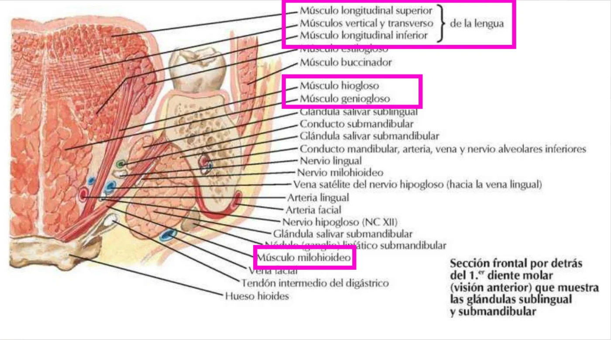
| Grupo | Músculos |
|---|---|
| Intrínsecos | Longitudinal superior, longitudinal inferior, transverso e vertical — modelam a língua |
| Extrínsecos | Genioglosso, hioglosso, estiloglosso e palatoglosso — movem a língua e a ligam às estruturas vizinhas |
Na secção frontal, o genioglosso forma o grosso do corpo lingual junto ao plano mediano, o hioglosso fica lateral, e abaixo deles aparece o milo-hioideo, que forma o assoalho da boca. Entre os músculos e a glândula sublingual passam o nervo lingual, o nervo hipoglosso (XII) e a artéria lingual.
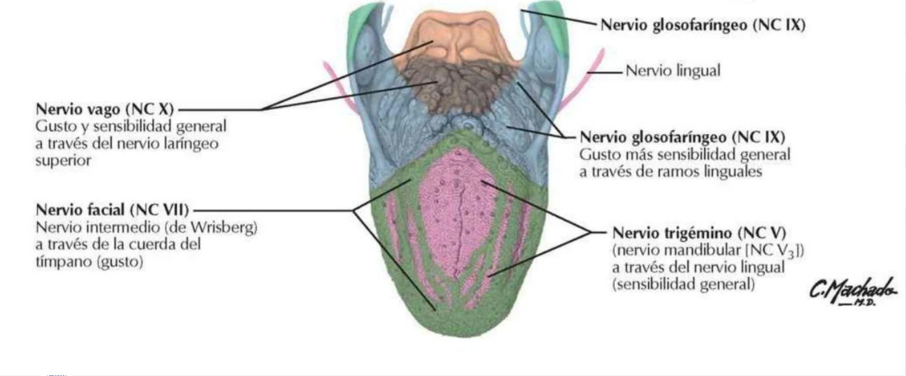
| Território | Sensibilidade geral | Gosto |
|---|---|---|
| 2/3 anteriores (adiante do surco terminal) | Nervo lingual (ramo do mandibular, V3, trigêmeo) | Nervo facial (VII), pela corda do tímpano |
| 1/3 posterior (raiz) | Glossofaríngeo (IX), ramos linguais | Glossofaríngeo (IX) |
| Pregas glossoepiglóticas, valéculas e epiglote | Nervo laríngeo superior (ramo do vago, X) | Vago (X) |
| Motricidade | Nervo hipoglosso (XII) | |
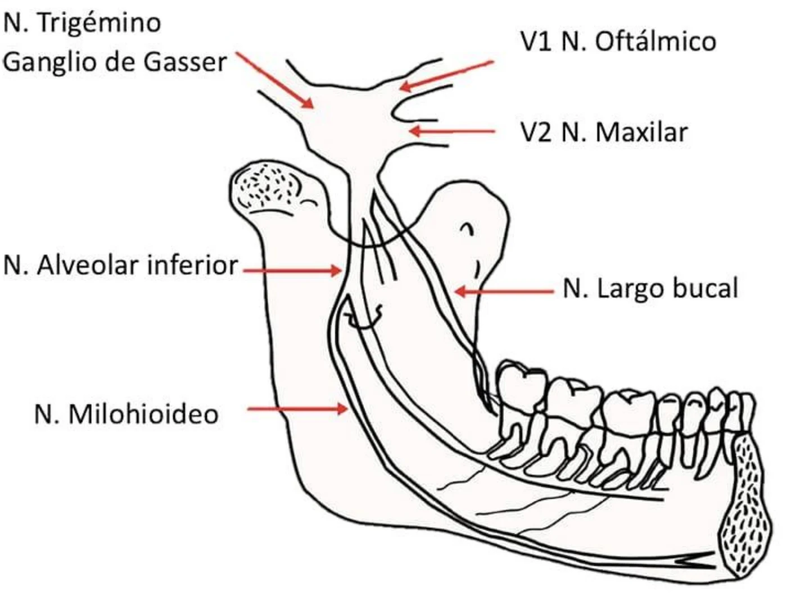
O gânglio trigeminal (de Gasser) dá origem às três divisões do trigêmeo: V1 oftálmico, V2 maxilar e V3 mandibular. Do mandibular saem, entre outros, o nervo alveolar inferior (dentes e queixo), o nervo lingual (sensibilidade geral dos 2/3 anteriores da língua), o nervo bucal e o nervo milo-hioideo (motor para o milo-hioideo e ventre anterior do digástrico).
| Elemento | Descrição |
|---|---|
| Faces (3) | 2 faces laterais e 1 face posterior |
| Bordas (3) | 2 bordas laterais e 1 borda anterior |
| Raiz | Espaço interciliar; une o nariz à fronte |
| Base | Inferior; mostra as duas narinas separadas pelo tabique mediano |
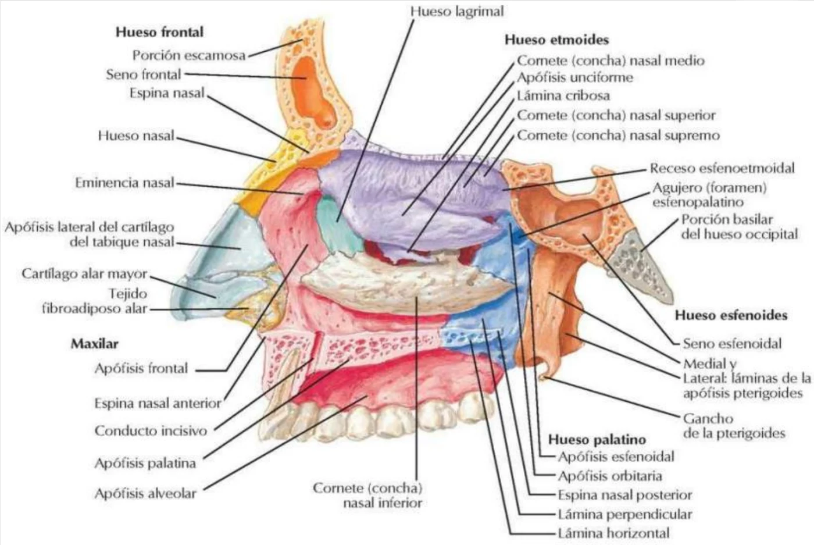
Ossos: os ossos nasais, o processo frontal da maxila, a parte anterior da lâmina perpendicular do etmoide, a espinha nasal do frontal e a borda anterior do processo palatino da maxila.
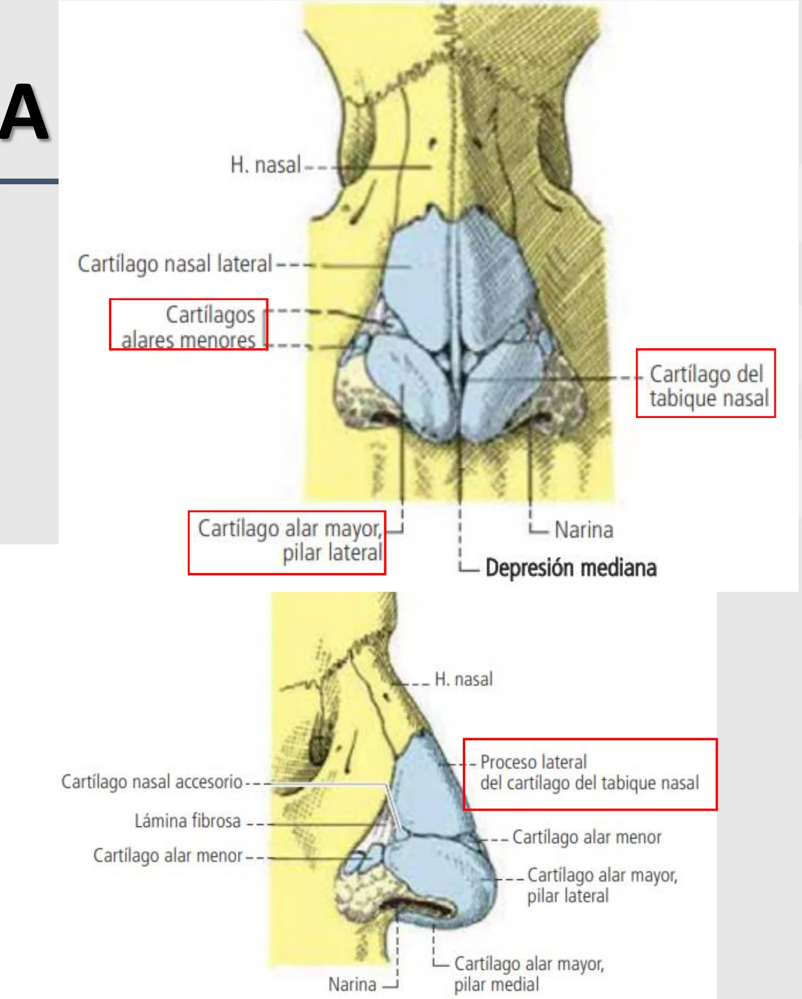
| Cartilagens principais (3) | Número |
|---|---|
| Cartilagem do tabique nasal | Única |
| Cartilagem alar maior | Duas (com pilar medial e pilar lateral) |
| Cartilagem alar menor | Várias |
As cartilagens acessórias têm forma muito variável: quadradas, sesamoides e vomerianas.
O nariz é forrado internamente pela mucosa nasal (pituitária). Os músculos da expressão que movem o nariz são todos inervados pelo nervo facial (VII), enquanto a sensibilidade depende do nervo trigêmeo (V).
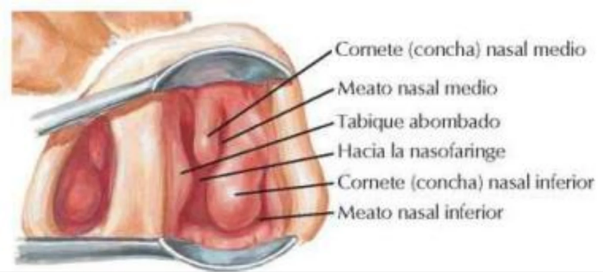
| Limite | Estrutura |
|---|---|
| Parede medial | Tabique do nariz (cartilagem) |
| Parede lateral | Asa do nariz |
| Parede anterior | Vértice do nariz |
| Abertura inferior | Narinas |
| Abertura superior | Limen nasi |
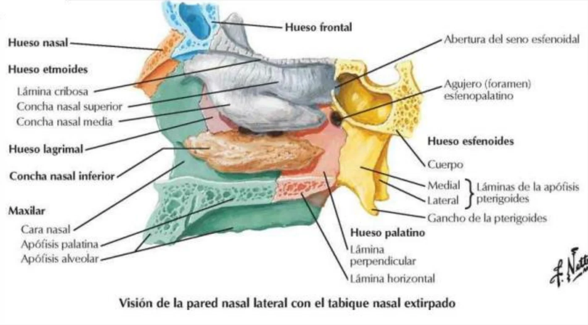
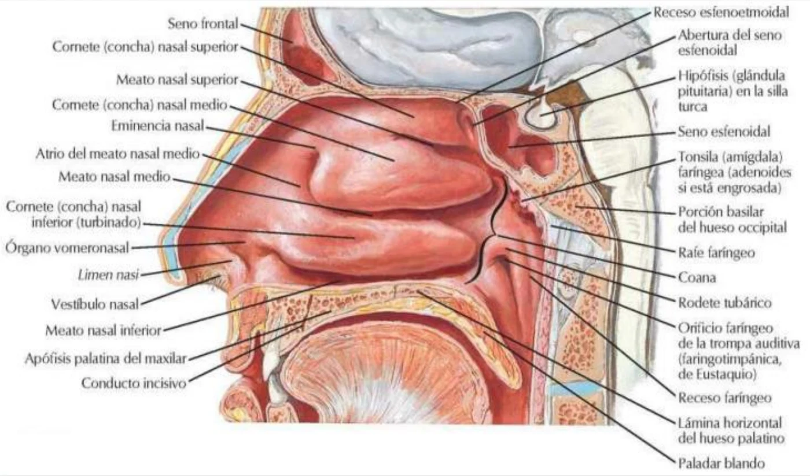
A parede lateral mostra três conchas (cornetos) nasais: superior e média (parte do etmoide) e inferior (osso próprio). Sob cada concha fica um meato (superior, médio e inferior). A cavidade abre-se para a nasofaringe pelas coanas, e a parede lateral inclui lâmina perpendicular do palatino, maxila, lacrimal e esfenoide.
| Meato | Drenagem (complemento) |
|---|---|
| Superior | Células etmoidais posteriores |
| Médio | Seios frontal e maxilar e células etmoidais anteriores e médias |
| Inferior | Ducto nasolacrimal |
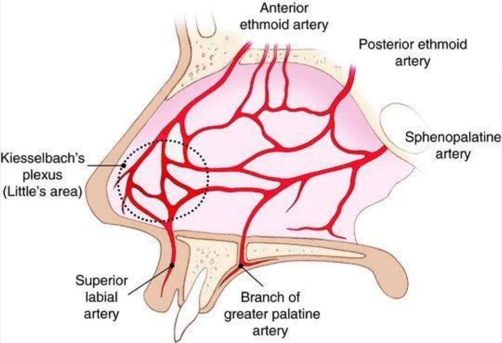
A área de Kiesselbach, no septo anterior, é uma anastomose de quatro artérias:
| Artéria | Origem (complemento) |
|---|---|
| Labial superior | Facial (carótida externa) |
| Esfenopalatina (ramos septais) | Maxilar (carótida externa) |
| Etmoidal anterior | Oftálmica (carótida interna) |
| Palatina maior | Maxilar (carótida externa) |
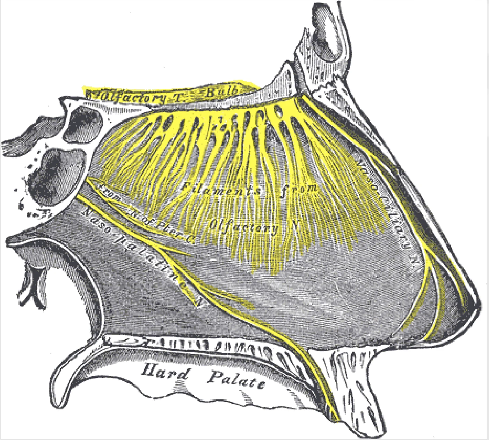
Via olfatória: epitélio olfatório → células olfatórias → atravessam a lâmina cribosa do etmoide → bulbo olfatório → trato olfatório. Os filetes do nervo olfatório (I) ocupam a região superior da cavidade nasal e a parte alta do septo; no septo correm ainda os nervos nasopalatino e nasociliar, de sensibilidade geral.
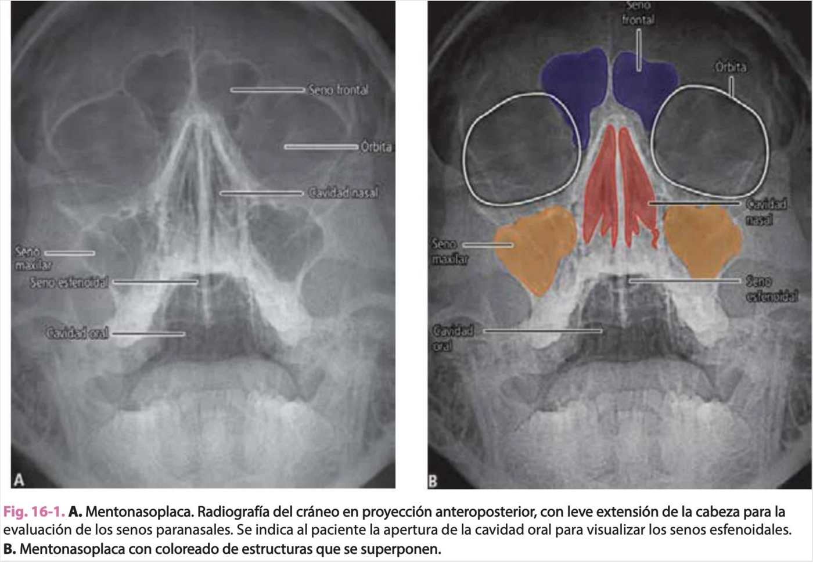
Na incidência mentonasoplaca, com a boca aberta, enxergam-se os seios frontais (azul), os seios maxilares (laranja), a cavidade nasal (vermelho) e o seio esfenoidal projetado sobre a cavidade oral.
Na expiração, a coluna de ar faz vibrar as pregas vocais da laringe e produz o som. Essas vibrações chegam às cavidades nasais, que funcionam como caixa de ressonância. A obstrução das cavidades nasais muda o timbre da voz (voz nasal).
| Tema | Frequência |
|---|---|
| Inervação sensitiva, gustativa e motora da língua | 🔥🔥🔥🔥🔥 |
| Surco terminal, forame cego, papilas e partes da língua | 🔥🔥🔥🔥 |
| Músculos intrínsecos e extrínsecos da língua | 🔥🔥🔥🔥 |
| Área de Kiesselbach e epistaxe | 🔥🔥🔥🔥 |
| Conchas, meatos e drenagem dos seios | 🔥🔥🔥🔥 |
| Esqueleto osteocartilagíneo do nariz | 🔥🔥🔥 |
| Via olfatória e lâmina cribosa | 🔥🔥🔥 |
A área de Kiesselbach reúne ramos da carótida externa (labial superior, esfenopalatina, palatina maior) e da interna (etmoidal anterior) numa região de mucosa fina e muito exposta.
O hipoglosso (XII) inerva os músculos da língua, e o genioglosso é o músculo que a protrai.
A corda do tímpano, ramo do facial que se junta ao nervo lingual, transporta o gosto dos 2/3 anteriores da língua.
Seios frontal, maxilar e células etmoidais anteriores drenam no meato médio.
Os filetes do nervo olfatório atravessam a lâmina cribosa do etmoide para chegar ao bulbo olfatório.
12 imagens — ilustrações clássicas e diagramas da cátedra sobre língua, nariz, cavidade nasal e seios paranasais. Toque em qualquer imagem pra abrir em tamanho grande (🔍 zoom).
20 rodadas de perguntas rápidas sobre classificação do sistema nervoso, morfologia da medula espinal, raízes, meninges e vascularização, 1 por vez, 60 segundos pra você responder mentalmente. A pergunta muda sozinha quando o tempo acaba (ou clica em "Já sei, próxima"). No final, você vê o gabarito completo de tudo.
O sistema guarda, no seu navegador, quais cards você já sabe bem e quais precisam voltar mais cedo — cada vez que você avalia um card, ele recalcula quando ele deve voltar.
20 questões cobrindo classificação do sistema nervoso, morfologia e configuração interna da medula espinal, raízes, meninges e vascularização. Escolhe uma alternativa, depois clica em "Ver comentário completo".